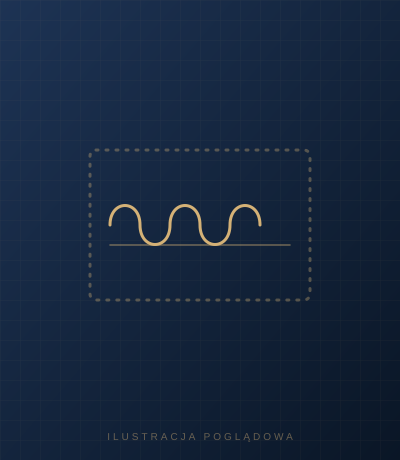
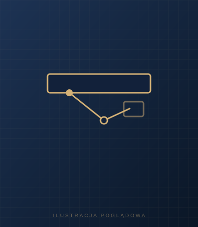

Drzwi akcesoria
Wyposażenie dodatkowe do drzwi: klamki, uszczelki, samozamykacze, dźwignie antypaniczne, zamki i regulatory kolejności zamykania.
Klamki do drzwi przeciwpożarowych
Klamki dobierane do drzwi przeciwpożarowych, dostępne jako wyposażenie dodatkowe.

Uszczelki do drzwi przeciwpożarowych
Uszczelki jako wyposażenie dodatkowe drzwi przeciwpożarowych i dymoszczelnych.

Samozamykacze
Samozamykacze, które domykają drzwi po przejściu, dostępne jako wyposażenie dodatkowe.

Dźwignie antypaniczne
Dźwignie antypaniczne do drzwi na drogach ewakuacyjnych, umożliwiające szybkie otwarcie drzwi od wewnątrz.

Zamki do drzwi
Zamki dobierane do rodzaju drzwi, dostępne jako wyposażenie dodatkowe.

Regulator kolejności zamykania skrzydeł
Regulator kolejności zamykania skrzydeł w drzwiach dwuskrzydłowych: zapewnia, że skrzydła domykają się w prawidłowej kolejności.
Nie widzisz modelu, którego szukasz? Dobierzemy drzwi do Twojego otworu.